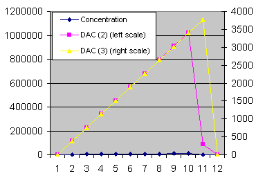
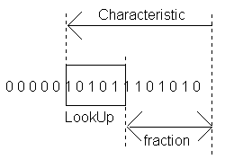

Februari 2002
LOG math
|
These routines were written to perform a logarithmic conversion on a 24-bit AD-value and to return the result back into a 20 bit DA-converter. So besides log conversion (and some other calculations) a fairly high gain has to be used to achieve a large dynamic range. Both AD-converter and DA-converter can be controlled in offset binary, which is most easy to handle for these kind of calculations (log can only be calculated for positive numbers) This document describes some background information about the log calculation. Description and download, see JAL routines On the right is a simulation of the algoritme (6 bits lookup) with JALss. The circuit consists of a photospectrometer, 3* 24-bit ADC, PIC-16F628 and 2* 20-bit DAC. The output of the photospectrometer is an exponential signal of the form V = V0 * exp ( - concentration * constant ) So the expected output, due to a linear increasing concentration, should be a perfect right line, which it is, for both small and large dynamic range. (note the purple point on the right, is an overflow of the ADC) |
 |
Table Look-up + linear Interpolation
|
From ( ref1) it seems obvious that table lookup with linear interpolation is the most easy way to compute the logarithm. In calculating a logarithm, it doesn't matter which base is chozen, because another base just results in (another) gain-factor. So it's logical to choose logbase=2, in which case determining the log is in principle just a matter of detremining the left most "1". On the right is a intuitive explanation of the logarithm on the base 2:
|
 |
The basics
of the algoritm is now quiet simple:
TOT_Nbits = 24; {total number of bits used for all calculations}
LUT_Nbits = 3; {number of bits used to search in the lookup table}
The llokup table is derived by the following formula:
LUT [ i ] = GAIN * log2 ( i + n ) for i = 0 .... (1 shl (LUT_Nbits-1))
|
The gain factor GAIN should be chozen in such a way that the maximum dynamic range is achieved. To keep aritmethic simple, the GAIN might be chosen just a little bit smaller, so multiplying becomes shifting. The optimal GAIN is only dependent on the total number of bits used. I lost my notes, so I can't explain anymore what the base of these formulas is. So if anyone knows ? If you don't add the minus 1, the calculated value will overflow at it's maximum value with just one value !! Another way to keep calculations simple and still avoiding overflow, would be to subtract 1 from the final result. Fot the 24 bit case, leaving the factor (4/3) out makes life much easier (of course also the -1 can be left out in that case). The factor 4/3 , because 24 is not a power of 2, so 32/24 = 4/3. With 24 bit and leaving out the factor 4/3, the dynamic range goes upto 0x_C0_00_00. |
TOT_Nbits: optimal GAIN 8: GAIN = -1 + ( 1 SHL 5 ) 16: GAIN = -1 + ( 1 SHL 12 ) 24: GAIN = -1 + ( 1 SHL 19 ) * 4/3 |
Maximum Error
The logarithm function is a monotonic (slowly) increasing function.
The largest error will occur, where the distances in the lookup table is largest.
Therefore the largest deviation will occur with small input values, with a lookup value about halfway the first and second table value.
From simulations (all 24 bit values, and lookup tables from 3 bits to 6 bits) it can be seen that the maximum error indeed occurs at small values, exactly inbetween the first 2 points of the lookup table.
|
Therefore the maximum error can easily be calculated with the following formula value where maximum error will occure : X = ( 2 ^ N ) + 1 calc_log ( X ) = 0.5 * ( LUT [ 0 ] + LUT [ 1 ] ) On the right are the results form simulations over all 24 bit numbers, indicating above assumption is indeed correct. In the JAL routines the value of N can be set from 3 ... 6. |
N X max errror 3 0x09 0.3 % 4 0x11 0.06 % 5 0x21 0.013 % 6 0x41 0.003 % |
Background Info
|
; PIC 24 bits log tables ; for 3 bits lookup ; gainfactor = $080000 |
1 = 0 2 = 0x_08_00_00 3 = 0x_0C_AE_01 4 = 0x_10_00_00 8 = 0x_18_00_00 |
0x_00_00_10 = 0x_20_00_00 0x_00_01_00 = 0x_40_00_00 0x_00_10_00 = 0x_60_00_00 0x_FF_FF_FF =0x_BF_FF_F9 |
24 bits lookup tables
All are optimized for maximum output without overflow.
gain factor is set to GAIN = -1+ (1 SHL (TOT_Nbits-5))*4/3
|
; PIC 24 bits log tables ; for 3 bits lookup ; gainfactor = $080000 ; largest value = $00BFFFF9 ; MSB table (3bit) retlw 0x10 retlw 0x12 retlw 0x14 retlw 0x16 retlw 0x18 ; middle table (3bit) retlw 0x00 retlw 0x93 retlw 0xAE retlw 0x75 retlw 0x00 ; LSB table (3bit) retlw 0x00 retlw 0x4F retlw 0x01 retlw 0x76 retlw 0x00 |
; PIC 24 bits log tables ; for 4 bits lookup ; gainfactor = $080000 ; largest value = $00BFFFF7 ; MSB table (4bit) retlw 0x18 retlw 0x19 retlw 0x1A retlw 0x1B retlw 0x1C retlw 0x1D retlw 0x1E retlw 0x1F retlw 0x20 ; middle table (4bit) retlw 0x00 retlw 0x5C retlw 0x93 retlw 0xAC retlw 0xAE retlw 0x9A retlw 0x75 retlw 0x41 retlw 0x00 ; LSB table (4bit) retlw 0x00 retlw 0x02 retlw 0x4F retlw 0xEA retlw 0x01 retlw 0x80 retlw 0x76 retlw 0x50 retlw 0x00 |
; PIC 24 bits log tables ; for 5 bits lookup ; gainfactor = $080000 ; largest value = $00BFFFF6 ; MSB table (5bit) retlw 0x20 retlw 0x20 retlw 0x21 retlw 0x21 retlw 0x22 retlw 0x23 retlw 0x23 retlw 0x24 retlw 0x24 retlw 0x25 retlw 0x25 retlw 0x26 retlw 0x26 retlw 0x26 retlw 0x27 retlw 0x27 retlw 0x28 ; middle table (5bit) retlw 0x00 retlw 0xB3 retlw 0x5C retlw 0xFB retlw 0x93 retlw 0x23 retlw 0xAC retlw 0x30 retlw 0xAE retlw 0x26 retlw 0x9A retlw 0x0A retlw 0x75 retlw 0xDD retlw 0x41 retlw 0xA2 retlw 0x00 ; LSB table (5bit) retlw 0x00 retlw 0x20 retlw 0x02 retlw 0xC1 retlw 0x4F retlw 0x77 retlw 0xEA retlw 0x41 retlw 0x01 retlw 0x9E retlw 0x80 retlw 0x02 retlw 0x76 retlw 0x25 retlw 0x50 retlw 0x32 retlw 0x00 |
|
; PIC 24 bits log tables ; for 6 bits lookup ; gainfactor = $080000 ; largest value = $00BFFFFA ; MSB table (6bit) retlw 0x28 retlw 0x28 retlw 0x28 retlw 0x29 retlw 0x29 retlw 0x29 retlw 0x29 retlw 0x2A retlw 0x2A retlw 0x2A retlw 0x2B retlw 0x2B retlw 0x2B retlw 0x2B retlw 0x2C retlw 0x2C retlw 0x2C retlw 0x2C retlw 0x2D retlw 0x2D retlw 0x2D retlw 0x2D retlw 0x2E retlw 0x2E retlw 0x2E retlw 0x2E retlw 0x2E retlw 0x2F retlw 0x2F retlw 0x2F retlw 0x2F retlw 0x2F retlw 0x30 |
; middle table (6bit) retlw 0x00 retlw 0x5A retlw 0xB3 retlw 0x08 retlw 0x5C retlw 0xAC retlw 0xFB retlw 0x48 retlw 0x93 retlw 0xDC retlw 0x23 retlw 0x68 retlw 0xAC retlw 0xEF retlw 0x30 retlw 0x6F retlw 0xAE retlw 0xEA retlw 0x26 retlw 0x61 retlw 0x9A retlw 0xD2 retlw 0x0A retlw 0x40 retlw 0x75 retlw 0xA9 retlw 0xDD retlw 0x0F retlw 0x41 retlw 0x72 retlw 0xA2 retlw 0xD1 retlw 0x00 |
; LSB table (6bit) retlw 0x00 retlw 0xEB retlw 0x20 retlw 0xC6 retlw 0x02 retlw 0xF6 retlw 0xC1 retlw 0x81 retlw 0x4F retlw 0x44 retlw 0x77 retlw 0xFD retlw 0xEA retlw 0x51 retlw 0x41 retlw 0xCC retlw 0x01 retlw 0xED retlw 0x9E retlw 0x21 retlw 0x80 retlw 0xC8 retlw 0x02 retlw 0x3A retlw 0x76 retlw 0xC2 retlw 0x25 retlw 0xA7 retlw 0x50 retlw 0x26 retlw 0x32 retlw 0x78 retlw 0x00 |